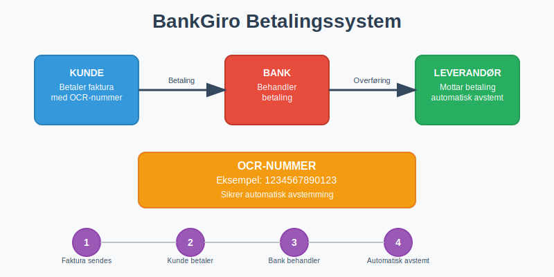
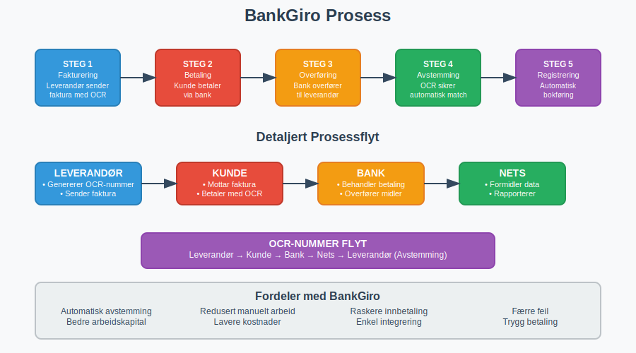
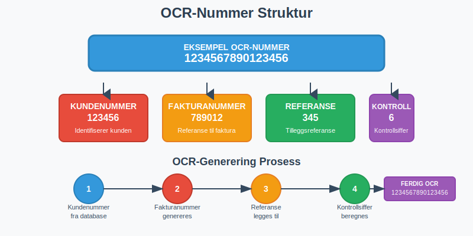
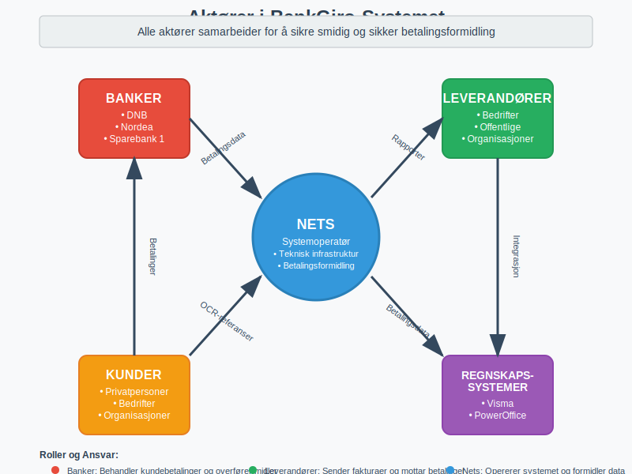
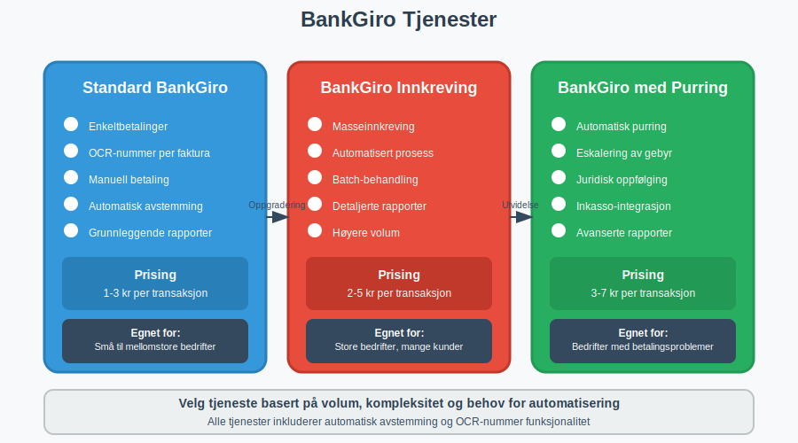
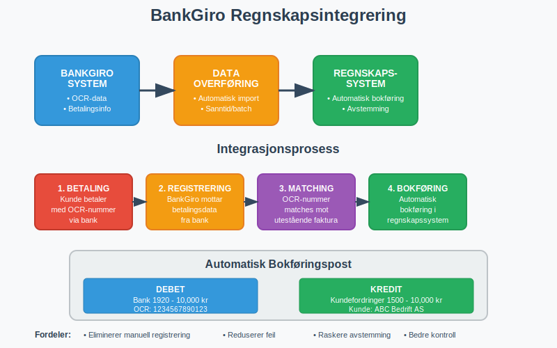

BankGiro er et av Norges mest brukte betalingssystemer for fakturaer og regninger. Dette elektroniske betalingssystemet gjør det enkelt for både privatpersoner og bedrifter å betale og motta betalinger med automatisk avstemming gjennom OCR-nummer. Som en av de tradisjonelle betalingstjenestene i Norge, utgjør BankGiro en viktig del av det moderne betalingslandskapet.
Les mer om Bedriftsbank for en helhetlig oversikt over bedriftens bank- og betalingstjenester.

Hva er BankGiro?
BankGiro er et elektronisk betalingssystem som ble etablert i Norge på 1980-tallet som en del av moderniseringen av det norske giro-systemet. Systemet gjør det mulig å betale fakturaer og regninger ved hjelp av OCR-nummer (Optical Character Recognition), som sikrer automatisk avstemming hos mottaker.
Hovedprinsippet bak BankGiro er:
- Leverandør sender faktura med unikt OCR-nummer
- Kunde betaler via nettbank, mobilbank eller bankkontor
- OCR-nummer sikrer automatisk avstemming hos leverandør
- Betalingen registreres automatisk i leverandørens regnskap
Dette systemet håndterer milliarder av kroner i betalinger årlig og brukes av praktisk talt alle norske bedrifter.

Hvordan Fungerer BankGiro?
Teknisk Prosess
BankGiro-systemet fungerer gjennom en strukturert prosess som involverer flere aktører:
- Fakturering: Leverandør sender faktura med OCR-nummer
- Betaling: Kunde betaler via bank med OCR-nummer som referanse
- Overføring: Banken overfører beløpet til leverandørens konto
- Avstemming: OCR-nummeret sikrer automatisk avstemming
- Registrering: Betalingen registreres automatisk i leverandørens system
- Rapportering: Leverandør mottar detaljert betalingsinformasjon
OCR-Nummer Systemet
OCR-nummer er kjernen i BankGiro-systemet og består av:
- Kundenummer: Identifiserer kunden hos leverandør
- Fakturanummer: Referanse til spesifikk faktura
- Kontrollsiffer: Sikrer korrekt registrering

Aktører i BankGiro-Systemet
BankGiro-systemet involverer flere viktige aktører:
Nets (Tidligere BBS)
- Operatør av BankGiro-systemet i Norge
- Teknisk infrastruktur for betalingsformidling
- Rapportering til leverandører
- Systemutvikling og vedlikehold
Banker
- Behandler kundebetalinger
- Overfører midler mellom kontoer
- Tilbyr betalingsløsninger til kunder
- Sikrer betalingssikkerhet
Leverandører
- Sender fakturaer med OCR-nummer
- Mottar betalinger via BankGiro
- Avstemmer betalinger automatisk
- Rapporterer til regnskap

Fordeler med BankGiro
For Privatpersoner og Bedrifter som Betaler
- Enkel betaling: Kun OCR-nummer og beløp trengs
- Automatisk avstemming: Ingen risiko for feil registrering
- Fleksibilitet: Kan betales via alle norske banker
- Sikkerhet: Etablert og trygt betalingssystem
- Sporbarhet: Enkel oppfølging av betalinger
For Bedrifter som Mottar Betaling
- Automatisk avstemming: Reduserer manuelt arbeid betydelig
- Forbedret arbeidskapital: Raskere registrering av innbetalinger
- Reduserte kostnader: Mindre manuell behandling
- Bedre oversikt: Detaljerte rapporter fra Nets
- Integrering: Enkel kobling til regnskapssystemer
Typer BankGiro-Tjenester
Det finnes flere varianter av BankGiro tilpasset ulike behov:
Standard BankGiro
- Enkeltbetalinger: For individuelle fakturaer
- OCR-nummer: Unikt nummer per faktura
- Manuell betaling: Kunde initierer betaling selv
BankGiro Innkreving
- Masseinnkreving: For mange kunder samtidig
- Automatisert prosess: Reduserer manuelt arbeid
- Rapportering: Detaljerte innkrevingsrapporter
BankGiro med Purring
- Automatisk purring: Ved manglende betaling
- Eskalering: Gradvis økning av purregebyr
- Juridisk oppfølging: Kobling til inkassoselskaper

Oppsett og Implementering
For Bedrifter som Ønsker å Motta BankGiro
Tekniske Krav:
- Bankkonto: Norsk bankkonto for mottak av betalinger
- Avtale med Nets: Kontrakt for bruk av BankGiro-tjenester
- IT-system: Regnskapssystem som støtter BankGiro
- OCR-generering: System for å generere unike OCR-nummer
Implementeringsprosess:
- Kontakt Nets: Inngå avtale om BankGiro-tjenester
- Teknisk oppsett: Implementer OCR-generering
- Testing: Test systemet med prøvebetalinger
- Integrering: Koble til regnskapssystem
- Lansering: Begynn å sende fakturaer med OCR-nummer
Kostnader og Prising
| Tjeneste | Oppsettskostnad | Løpende Kostnad | Merknad |
|---|---|---|---|
| Standard BankGiro | 5,000 - 15,000 kr | 1-3 kr per transaksjon | Avhenger av volum |
| BankGiro Innkreving | 10,000 - 25,000 kr | 2-5 kr per transaksjon | Inkluderer purrefunksjon |
| Integrerte løsninger | 15,000 - 50,000 kr | Fast månedspris | Fullintegrert system |
Regnskapsmessig Behandling
Bokføring av BankGiro-Betalinger
For Leverandør (Mottaker):
Debet: Bank 10,000 kr
Kredit: Kundefordringer 10,000 kr
Automatisk avstemming gjør at betalinger kan bokføres automatisk basert på OCR-nummer og kobles til riktig kundefordring.
Integrering med Regnskapssystemer
Moderne regnskapssystemer støtter automatisk import av BankGiro-data:
- Automatisk bokføring: Betalinger bokføres uten manuell inngripen
- Avstemming: Automatisk matching mot utestående fakturaer
- Rapportering: Integrerte rapporter for oppfølging
- Kontroll: Automatiske kontroller for avvik

Sammenligning med Andre Betalingssystemer
BankGiro vs AvtaleGiro
| Aspekt | BankGiro | AvtaleGiro |
|---|---|---|
| Type betaling | Enkeltbetalinger | Automatiske, regelmessige betalinger |
| Initiativ | Kunde initierer | Leverandør initierer |
| OCR-nummer | Ja, per faktura | Nei, fast avtale |
| Fleksibilitet | Høy, betales når kunde ønsker | Lav, fast dato |
| Bruksområde | Alle typer fakturaer | Faste regninger (strøm, forsikring) |
BankGiro vs Vipps/Mobilbetaling
| Aspekt | BankGiro | Mobilbetaling |
|---|---|---|
| Avstemming | Automatisk via OCR | Manuell eller semi-automatisk |
| B2B-egnethet | Svært godt egnet | Begrenset for større beløp |
| Integrasjon | Høy grad av systemintegrasjon | Varierende integrasjonsmuligheter |
| Kostnader | Lave transaksjonskostnader | Høyere kostnader per transaksjon |
Juridiske Aspekter og Regelverk
Betalingstjenestedirektivet (PSD2)
BankGiro er regulert under PSD2-direktivet som sikrer:
- Sikkerhet: Krav til sikker autentisering
- Transparens: Tydelig informasjon om kostnader
- Konkurranse: Åpning for nye aktører
- Forbrukerrettigheter: Beskyttelse av betalere
Personvernforordningen (GDPR)
Ved bruk av BankGiro må bedrifter følge GDPR-krav:
- Databehandling: Lovlig grunnlag for behandling av kundedata
- Informasjonsplikt: Informere kunder om databruk
- Rettigheter: Respektere kunders rettigheter
- Sikkerhet: Sikre persondata mot misbruk
Regnskapsloven
BankGiro-betalinger må dokumenteres i henhold til regnskapsloven:
- Dokumentasjon: Alle transaksjoner må dokumenteres
- Oppbevaring: Dokumenter må oppbevares i 5 år
- Sporbarhet: Mulighet for å spore alle betalinger
- Kontroll: Internkontroll av betalingsprosesser
Fremtiden for BankGiro
Teknologisk Utvikling
Digitalisering driver utviklingen av BankGiro:
- API-er: Bedre integrasjon med moderne systemer
- Sanntidsbetalinger: Raskere behandling av betalinger
- Kunstig intelligens: Automatisk håndtering av avvik
- Blockchain: Potensial for økt sikkerhet og transparens
Konkurranse fra Nye Aktører
Nye betalingsløsninger utfordrer BankGiro:
- Fintech-selskaper: Innovative betalingsløsninger
- Internasjonale aktører: Globale betalingssystemer
- Kryptovaluta: Alternative betalingsformer
- Åpen bankvirksomhet: Nye muligheter for integrasjon
Praktiske Råd for Bedrifter
Implementering av BankGiro
Før implementering:
- Vurder behov: Analyser betalingsvolum og kundebase
- Sammenlign leverandører: Evaluer ulike tilbydere av BankGiro-tjenester
- Planlegg integrering: Sikre kompatibilitet med eksisterende systemer
- Budsjetter kostnader: Inkluder både oppsett og løpende kostnader
Under implementering:
- Test grundig: Gjennomfør omfattende testing før lansering
- Tren personale: Sikre at ansatte forstår det nye systemet
- Informer kunder: Kommuniser endringer til kundebasen
- Overvåk nøye: Følg opp systemet tett i startfasen
Optimalisering av BankGiro-Bruk
For bedre arbeidskapital:
- Kort betalingsfrist: Reduser kredittid til kunder
- Automatisk purring: Implementer automatiske purrerutiner
- Rabatter: Tilby kontantrabatt for rask betaling
- Oppfølging: Systematisk oppfølging av utestående fordringer
For bedre kundeservice:
- Tydelige fakturaer: Sikre at OCR-nummer er godt synlig
- Betalingsinstruksjoner: Gi klare instruksjoner for betaling
- Kundesupport: Tilby hjelp ved betalingsproblemer
- Fleksibilitet: Tilby alternative betalingsmetoder
Vanlige Utfordringer og Løsninger
Tekniske Utfordringer
Problem: OCR-nummer genereres feil Løsning: Implementer kontrollrutiner og validering
Problem: Manglende systemintegrasjon Løsning: Investér i moderne regnskapssystem med BankGiro-støtte
Problem: Betalinger avstemmes ikke automatisk Løsning: Sjekk OCR-nummer format og systemoppsett
Kundeservice-Utfordringer
Problem: Kunder forstår ikke OCR-nummer Løsning: Tydelig informasjon på fakturaer og kundeveiledning
Problem: Betalinger kommer ikke frem Løsning: Rutiner for oppfølging og alternativ betaling
Problem: Kunder klager på komplisert betaling Løsning: Tilby flere betalingsalternativer og bedre veiledning
Konklusjon
BankGiro er et robust og effektivt betalingssystem som har vært en hjørnestein i det norske betalingssystemet i over 40 år. For bedrifter som ønsker å automatisere innbetalinger og forbedre arbeidskapitalen, er BankGiro en utmerket løsning.
Systemets automatiske avstemming gjennom OCR-nummer reduserer manuelt arbeid betydelig og minimerer risikoen for feil. Med riktig implementering og integrering kan BankGiro bidra til mer effektive regnskapsprosesser og bedre kundeservice.
Selv om nye betalingsløsninger utfordrer BankGiro, forblir det et viktig verktøy for norske bedrifter, spesielt for B2B-transaksjoner og større betalinger hvor automatisk avstemming er kritisk.
For bedrifter som vurderer BankGiro, er det viktig å planlegge implementeringen nøye og sikre god integrering med eksisterende systemer. Med riktig oppsett kan BankGiro være en verdifull investering som forbedrer både effektivitet og kundeopplevelse.